배우기 전에 먼저 해 보세요. 틀려도 괜찮아요.
der Preis des Autos는 무슨 뜻일까요?
des와 -s는 '~의'를 나타내요.
Ich habe den Kunden angerufen.에서 Kunden은 몇 사람일까요?
der Kunde는 하나일 때도 den Kunden으로 바뀌어요.
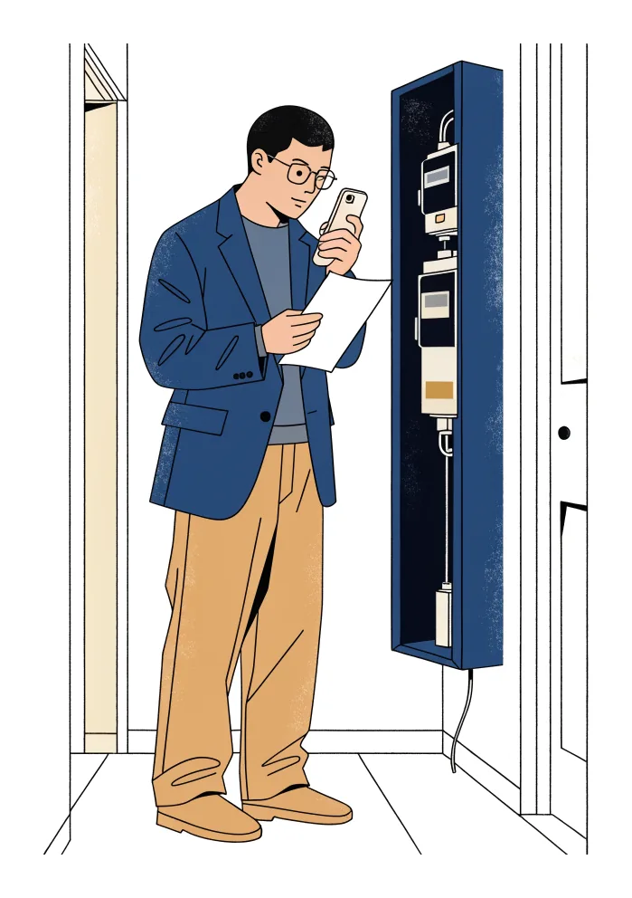
돈은 버는 것보다 쓰는 것이 어려워요. 다달이 어디에 얼마가 나가는지 알고, 광고가 무엇을 약속하는지 가려 보고, 청구서가 틀렸을 때는 바로잡아 달라고 요구해야 해요. 이 과에서는 '~의'를 나타내는 Genitiv와 wegen, trotz, während을 배워요. der Kunde가 den Kunden으로 바뀌는 n-Deklination도 익혀요.
문법 Genitiv, wegen, trotz, während, n-Deklination (der Kunde, den Kunden)
과제대학한 달 생활비 계획을 세우고 설명하기
과제직장잘못된 청구서에 대해 항의 편지 쓰기
이 과를 마치면 소비 습관을 말하고, 광고를 평가하고, 항의하면서 해결책을 요구할 수 있어요.
이 과에서 쓸 말이에요. 눌러서 먼저 들어 보세요.
배우기 전에 먼저 해 보세요. 틀려도 괜찮아요.
der Preis des Autos는 무슨 뜻일까요?
des와 -s는 '~의'를 나타내요.
Ich habe den Kunden angerufen.에서 Kunden은 몇 사람일까요?
der Kunde는 하나일 때도 den Kunden으로 바뀌어요.
Lektion 6의 낱말 다섯 개를 다시 떠올려 보세요.
1월 말의 저녁, WG 부엌이에요. Jiu가 휴대폰으로 계좌를 보고 한숨을 쉬어요.
들으면서 찾아보세요. Lena는 무엇이 문제라고 하나요?
화요일 오전이에요. Dohyun이 전기 회사 고객 센터에 전화해요. 한 해 전기 요금을 정산한 청구서에 더 낼 돈이 너무 많이 나왔어요.
들으면서 찾아보세요. 청구서에서 무엇이 잘못됐나요?
어학원 수업 시간이에요. 오늘의 주제는 광고예요. Frau Becker가 광고 포스터 한 장을 보여 줘요.
들으면서 찾아보세요. Sora는 지난주에 무엇을 샀나요?
세 대화를 듣고 답하세요.
Jiu는 한 달에 모두 얼마를 받나요?
Jiu weiß genau, wofür sie ihr Geld ausgibt.
정확히는 모른다고 했어요.
Lena는 무엇이 문제라고 하나요?
Dohyun의 청구서에서 무엇이 잘못됐나요?
Die vierhundertachtzig Euro wurden schon abgebucht.
전기 회사는 Dohyun에게 무엇을 보내 달라고 하나요?
Sora는 지난주에 무엇을 샀나요?
Sora findet, dass der Preis auf dem Plakat gut zu sehen ist.
맨 아래에 아주 작게 적혀 있다고 했어요.
낱말 52개예요. 낱말이나 예문 앞의 단추를 누르면 소리가 나요. 명사는 der, die, das를 색으로 구분했어요.
die Ausgabe, die Ausgaben 지출
Meine Ausgaben sind zu hoch.지출이 너무 많아요.
die Einnahme, die Einnahmen 수입
Meine Einnahmen sind tausend Euro im Monat.제 수입은 한 달에 천 유로예요.
das Einkommen 소득
Die Miete ist ein Drittel des Einkommens.집세가 소득의 3분의 1이에요.
ausgeben (du gibst aus, hat ausgegeben) (돈을) 쓰다
Wofür gibst du dein Geld aus?돈을 어디에 써요?
sich leisten (hat sich geleistet) (살) 형편이 되다
Das kann ich mir nicht leisten.그건 제 형편으로는 못 사요.
die Schulden 빚
Ich möchte keine Schulden machen.빚을 지고 싶지 않아요.
der Betrag, die Beträge 금액
Der Betrag stimmt nicht.금액이 맞지 않아요.
die Summe, die Summen 합계
Die Summe der Ausgaben ist zu hoch.지출을 다 합치면 너무 많아요.
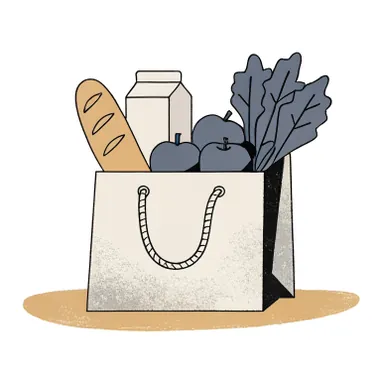
die Lebensmittel 식료품
Für Lebensmittel gebe ich zweihundert Euro aus.식료품에 이백 유로를 써요.
der Semesterbeitrag, die Semesterbeiträge 학기 등록비
Der Semesterbeitrag muss im Februar bezahlt werden.학기 등록비는 2월에 내야 해요.
das Stipendium, die Stipendien 장학금
Sie bekommt ein Stipendium.그 사람은 장학금을 받아요.
monatlich 달마다
Ich bezahle monatlich dreißig Euro.달마다 삼십 유로를 내요.
insgesamt 모두 합쳐
Insgesamt habe ich tausend Euro.모두 합쳐 천 유로가 있어요.
übrig bleiben (ist übrig geblieben) 남다
Am Ende bleibt nichts übrig.끝에는 아무것도 남지 않아요.
reichen (hat gereicht) 넉넉하다, 충분하다
Das Geld reicht nicht.돈이 모자라요.
knapp 빠듯한
Diesen Monat ist das Geld knapp.이번 달은 돈이 빠듯해요.
sparsam 아껴 쓰는
Lena ist sehr sparsam.Lena는 돈을 아주 아껴 써요.
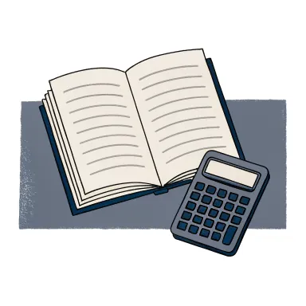
das Haushaltsbuch, die Haushaltsbücher 가계부
Ich führe ein Haushaltsbuch.저는 가계부를 써요.
das Abo, die Abos 정기 결제, 구독
Ich kündige zwei Abos.정기 결제 두 개를 해지해요.
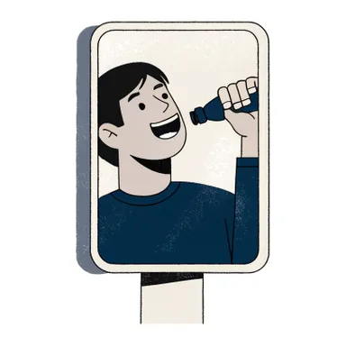
die Werbung 광고
Die Werbung verspricht zu viel.그 광고는 약속이 지나쳐요.
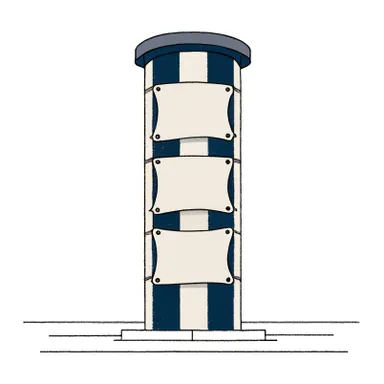
das Plakat, die Plakate 포스터, 광고판
An der Haltestelle hängt ein Plakat.정류장에 포스터가 붙어 있어요.
werben (du wirbst, hat geworben) 광고하다
Die Firma wirbt für ein neues Auto.그 회사는 새 자동차를 광고해요.
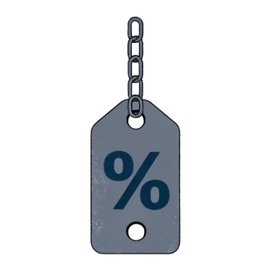
der Rabatt, die Rabatte 할인
Es gibt zwanzig Prozent Rabatt.20퍼센트 할인해요.
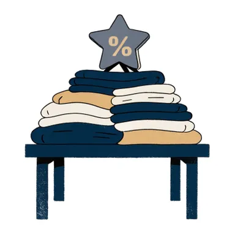
das Sonderangebot, die Sonderangebote 특가 상품
Der Mantel war ein Sonderangebot.그 외투는 특가 상품이었어요.
reduziert 값을 내린
Alle Jacken sind reduziert.재킷은 모두 값을 내렸어요.
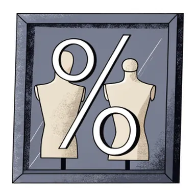
der Schlussverkauf 철 지난 물건 할인 판매
Im Januar beginnt der Schlussverkauf.1월에 할인 판매가 시작돼요.
der Verbraucher, die Verbraucher 소비자
Verbraucher haben Rechte.소비자에게는 권리가 있어요.
versprechen (du versprichst, hat versprochen) 약속하다
Die Werbung verspricht ein schöneres Leben.그 광고는 더 멋진 삶을 약속해요.
preiswert 값에 견주어 좋은
Das Handy ist gut und preiswert.그 휴대폰은 좋고 값도 괜찮아요.
spontan 계획 없이 하는
Ich kaufe oft spontan.저는 계획 없이 살 때가 많아요.
unnötig 필요 없는
Das war ein unnötiger Kauf.그건 필요 없는 걸 산 거였어요.
vorsichtig 조심하는
Bei Werbung im Internet bin ich vorsichtig.인터넷 광고는 조심해요.
der Wert 값어치
Gute Werbung zeigt den Wert eines Produkts.좋은 광고는 제품의 값어치를 보여 줘요.
die Mahnung, die Mahnungen 독촉장
Gestern kam eine Mahnung.어제 독촉장이 왔어요.
die Frist, die Fristen 기한
Die Frist endet am Freitag.기한은 금요일에 끝나요.
die Beschwerde, die Beschwerden 항의, 불만 제기
Ich schreibe eine Beschwerde.항의하는 글을 써요.
der Widerspruch, die Widersprüche 이의 제기
Bitte schicken Sie uns einen Widerspruch.이의 제기 글을 보내 주세요.
fordern (hat gefordert) 요구하다
Ich fordere mein Geld zurück.제 돈을 돌려 달라고 요구해요.
erstatten (hat erstattet) 돌려주다
Der Betrag wird Ihnen erstattet.금액을 돌려드려요.
zurückzahlen (hat zurückgezahlt) 갚다, 돌려주다
Die Firma zahlt das Geld zurück.회사가 돈을 돌려줘요.
abbuchen (hat abgebucht) (계좌에서) 빼 가다
Das Geld wurde gestern abgebucht.돈이 어제 빠져나갔어요.
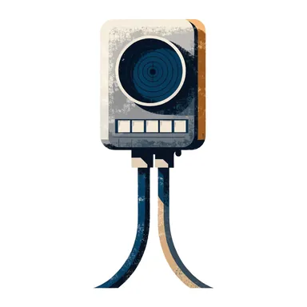
der Zähler, die Zähler 계량기
Der Zähler ist im Flur.계량기는 복도에 있어요.
der Zählerstand, die Zählerstände 계량기 숫자
Der Zählerstand ist falsch.계량기 숫자가 틀렸어요.
der Verbrauch 사용량
Unser Verbrauch war nicht höher.우리 사용량은 더 많지 않았어요.
die Nachzahlung, die Nachzahlungen 더 내는 돈
Die Nachzahlung ist sehr hoch.더 낼 돈이 아주 많아요.
das Recht, die Rechte 권리
Das ist mein Recht.그건 제 권리예요.
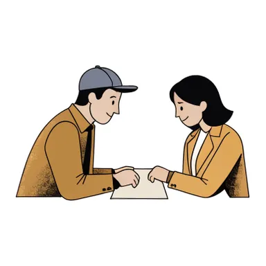
die Verbraucherzentrale, die Verbraucherzentralen 소비자 상담 기관
Die Verbraucherzentrale hilft bei Problemen mit Rechnungen.소비자 상담 기관은 청구서 문제를 도와줘요.
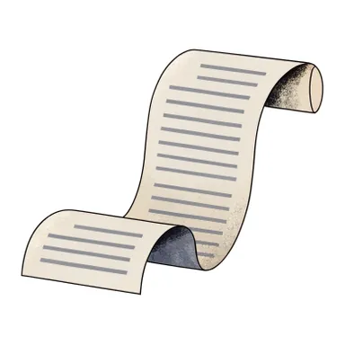
der Beleg, die Belege 영수증, 증빙
Haben Sie einen Beleg?영수증이 있으세요?
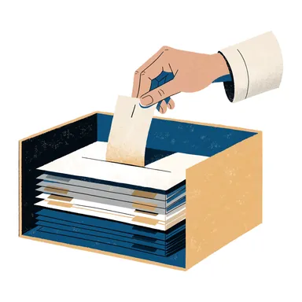
aufbewahren (hat aufbewahrt) 보관하다
Bewahren Sie die Rechnung gut auf.청구서를 잘 보관하세요.
wegen ~ 때문에
Ich rufe wegen der Rechnung an.청구서 때문에 전화했어요.
trotz ~인데도
Trotz des Rabatts ist es teuer.할인했는데도 비싸요.
während ~ 동안
Während des Semesters habe ich wenig Zeit.학기 중에는 시간이 별로 없어요.
이 과의 낱말로 여덟 문제를 풀어요.
줄을 누르면 소리가 나요. der와 das 명사는 des가 되고 명사에 -s나 -es가 붙어요. die 명사와 여럿은 der예요.
줄을 누르면 소리가 나요. 이 명사들은 der일 때만 빼고 늘 -n이나 -en이 붙어요.
규칙
Genitiv는 두 명사를 '~의'로 이어요. 뒤에 오는 명사가 Genitiv예요. der와 das 명사는 관사가 des가 되고 명사에 -s나 -es가 붙어요. die 명사와 여럿은 관사가 der가 되고 명사는 그대로예요. ein, mein, kein도 같은 끝을 가져요. eines, meiner처럼요. 형용사는 늘 -en으로 끝나요.
| 명사 | Genitiv | 보기 |
|---|---|---|
| der | des …s | der Preis des Mantels |
| das | des …s | das Ende des Jahres |
| die | der | die Miete der Wohnung |
| 여럿 | der | die Summe der Ausgaben |
주의 말할 때는 Genitiv 대신 von과 Dativ를 많이 써요. der Preis von dem Auto. 글에서는 Genitiv가 더 좋아요. 사람 이름에는 -s만 붙여서 앞에 둬요. Jius Zimmer, Lenas Plan. 영어와 달리 작은따옴표를 쓰지 않아요.
규칙을 보고 바로 확인해 보세요.
Bitte schicken Sie uns ein Foto … Zählers. 빈칸에 알맞은 말은 무엇인가요?
규칙
wegen은 '~ 때문에', trotz는 '~인데도', während은 '~ 동안'이에요. 세 낱말 뒤에는 Genitiv가 와요. 문장이 아니라 명사가 온다는 점이 weil, obwohl과 달라요. wegen과 weil, trotz와 obwohl은 뜻이 같고 모양만 달라요.
| 명사와 함께 | 문장과 함께 |
|---|---|
| wegen der Prüfung | weil ich eine Prüfung habe |
| trotz des Regens | obwohl es regnet |
| während des Essens | während wir essen |
주의 말할 때는 wegen 뒤에 Dativ를 쓰는 사람도 많아요. wegen dem Streik라고 해도 알아들어요. 글에서는 wegen des Streiks라고 써요. während은 문장을 이끌 수도 있어요. Während ich koche, höre ich Radio.
규칙을 보고 바로 확인해 보세요.
… des schlechten Wetters gehen wir spazieren. 빈칸에 알맞은 말은 무엇인가요?
규칙
der 명사 가운데 몇몇은 Nominativ만 빼고 늘 -n이나 -en이 붙어요. 사람과 직업을 나타내는 낱말이 많아요. -e로 끝나는 der Kunde, der Kollege, der Junge와, der Student, der Praktikant, der Journalist, der Mensch, der Nachbar, der Herr가 그래요. 하나일 때도 여럿일 때와 모양이 같아져요.
| 격 | 모양 |
|---|---|
| Nominativ | der Kunde |
| Akkusativ | den Kunden |
| Dativ | dem Kunden |
| Genitiv | des Kunden |
주의 Herr는 하나일 때 Herrn, 여럿일 때 Herren이에요. 그래서 편지 주소에 Herrn Park이라고 써요. der Name는 조금 달라서 Genitiv에 -s가 더 붙어요. des Namens. 이 낱말들은 낱말 목록에 여럿 꼴이 -n이나 -en으로 나와요.
규칙을 보고 바로 확인해 보세요.
Ich habe mit … Weber gesprochen. 빈칸에 알맞은 말은 무엇인가요?
규칙
'~의'는 두 가지로 말할 수 있어요. Genitiv는 글, 특히 편지와 기사에 써요. von과 Dativ는 말할 때 써요. 뜻은 같아요. 관사가 없는 낱말 앞에서는 글에서도 von을 써요.
| 글 | 말 |
|---|---|
| der Preis des Autos | der Preis von dem Auto |
| die Miete der Wohnung | die Miete von der Wohnung |
| der Name des Kunden | der Name von dem Kunden |
주의 항의 편지에서는 Genitiv를 쓰면 글이 또렷하고 정중해져요. die Nummer des Vertrags, der Betrag der Rechnung, der Name des Mitarbeiters. 이런 말을 통째로 익혀 두세요.
규칙을 보고 바로 확인해 보세요.
편지에 쓰기에 가장 알맞은 것은 무엇인가요?
듣고 알맞은 것을 고르세요.
언제 계좌가 비나요?
Am Ende des Monats ist mein Konto fast leer.
Dohyun은 왜 전화하나요?
Ich rufe wegen meiner Rechnung an.
외투는 어땠나요?
Trotz des Rabatts war der Mantel teuer.
Lena는 언제 돈을 더 쓰나요?
Während des Semesters gebe ich mehr Geld aus.
백화점의 안내 방송이에요. 듣고 답하세요.
Eine Durchsage im Kaufhaus
Durchsage Liebe Kundinnen und Kunden, heute ist der letzte Tag des Winterschlussverkaufs.
Durchsage Im ersten Stock sind alle Mäntel und Jacken um dreißig Prozent reduziert.
Durchsage Bitte beachten Sie: Wegen einer Feier unserer Mitarbeiter schließen wir heute schon um achtzehn Uhr.
Durchsage Und bewahren Sie bitte Ihren Kassenzettel auf. Reduzierte Ware kann nur innerhalb von vierzehn Tagen umgetauscht werden.
Was endet heute?
Um wie viel sind die Mäntel reduziert?
Das Kaufhaus schließt heute später als sonst.
오늘은 18시에 일찍 닫아요.
Wozu braucht man den Kassenzettel?
Dohyun이 전기 회사에 보낸 이의 제기 글이에요. 읽고 답하세요.
Widerspruch gegen die Jahresrechnung
Sehr geehrte Frau Seidel,
wie heute am Telefon besprochen, widerspreche ich der Jahresrechnung vom 20. Januar.
Der Zählerstand auf der Rechnung ist falsch. Dort steht 8.200, aber am Ende des Jahres stand mein Zähler bei 7.200. Ein Foto des Zählers finden Sie im Anhang.
Wegen dieses Fehlers wurden 480 Euro von meinem Konto abgebucht.
Ich bitte Sie, die Rechnung zu korrigieren und den Betrag innerhalb von zwei Wochen zu erstatten.
Mit freundlichen Grüßen
Dohyun Park
Warum schreibt Dohyun?
Was ist auf der Rechnung falsch?
Dohyun hat die 480 Euro noch nicht bezahlt.
벌써 계좌에서 빠져나갔어요.
Was schickt Dohyun mit?
Dohyun möchte den Betrag innerhalb von zwei Wochen zurückbekommen.
Genitiv예요. 알맞은 말을 고르세요.
Am Ende Monats ist mein Konto leer.
월말이면 계좌가 비어요.
Die Miete Wohnung ist zu hoch.
그 집의 집세가 너무 높아요.
Das ist die Summe Ausgaben.
그게 지출을 합친 돈이에요.
Ich mache eine Liste Ausgaben.
제 지출 목록을 만들어요.
Der Preis Autos steht ganz unten.
자동차 값은 맨 아래에 적혀 있어요.
Gute Werbung zeigt den Wert Produkts.
좋은 광고는 제품의 값어치를 보여 줘요.
wegen, trotz, während 가운데 알맞은 것을 고르세요.
Ich rufe meiner Rechnung an.
청구서 때문에 전화했어요.
des Rabatts war der Mantel teuer.
할인했는데도 그 외투는 비쌌어요.
des Semesters habe ich wenig Zeit.
학기 중에는 시간이 별로 없어요.
der Prüfungen habe ich oft im Café gegessen.
시험 때문에 카페에서 자주 먹었어요.
ihres Jobs hat Jiu am Ende des Monats kein Geld.
Jiu는 일을 하는데도 월말에 돈이 없어요.
Das Kaufhaus schließt einer Feier schon um sechs.
백화점은 잔치 때문에 6시에 닫아요.
-n이 붙는 명사예요. 알맞은 모양을 고르세요.
Ich rufe den morgen an.
그 고객에게 내일 전화할게요.
Das ist das Büro des .
거기가 그 동료의 사무실이에요.
Ich habe mit Weber gesprochen.
Herr Weber와 이야기했어요.
Wie ist der Name des ?
그 학생의 이름이 뭐예요?
Ich helfe meinem .
저는 이웃을 도와줘요.
Können Sie mir den sagen?
이름을 알려 주실 수 있나요?
괄호 안의 낱말을 Genitiv로 쓰세요.
am Ende des (der Monat)
월말에
am Anfang des (das Jahr)
연초에
der Preis des (das Auto)
자동차의 값
der Name des (der Kunde)
고객의 이름
während des (das Semester)
학기 중에
낱말을 순서대로 눌러 문장을 만드세요.
월말이면 계좌가 비어요.
청구서 때문에 전화했어요.
할인했는데도 그 외투는 비쌌어요.
그 고객에게 어제 전화했어요.
계량기 사진을 보내 주세요.
어울리는 말을 짝지으세요.
빈칸에 알맞은 낱말을 쓰세요.
Das kann ich mir nicht .
그건 제 형편으로는 못 사요.
Es gibt zwanzig Prozent .
20퍼센트 할인해요.
Das Geld wurde gestern .
돈이 어제 빠져나갔어요.
Am Ende bleibt nichts .
끝에는 아무것도 남지 않아요.
듣고 그대로 써 보세요.
Am Ende des Monats ist mein Konto leer. 월말이면 계좌가 비어요.
Ich rufe wegen meiner Rechnung an. 청구서 때문에 전화했어요.
Trotz des Rabatts war der Mantel teuer. 할인했는데도 그 외투는 비쌌어요.
Meine größte Ausgabe ist die Miete. 가장 큰 지출은 집세예요.
Für Lebensmittel gebe ich zweihundert Euro aus. 식료품에 이백 유로를 써요.
Am Ende des Monats bleibt nichts übrig. 월말에는 아무것도 남지 않아요.
Das kann ich mir nicht leisten. 그건 제 형편으로는 못 사요.
Die Werbung verspricht zu viel. 그 광고는 약속이 지나쳐요.
Über das Produkt erfährt man fast nichts. 제품에 대해서는 거의 알 수 없어요.
Das finde ich nicht ehrlich. 그건 솔직하지 않다고 생각해요.
Das Plakat ist gut gemacht. 그 포스터는 잘 만들었어요.
Ich rufe wegen meiner Rechnung an. 청구서 때문에 전화했어요.
Der Betrag kann nicht stimmen. 금액이 맞을 리가 없어요.
Der Zählerstand wurde falsch eingetragen. 계량기 숫자를 잘못 기입했어요.
Trotz meiner E-Mail habe ich keine Antwort bekommen. 메일을 보냈는데도 답을 받지 못했어요.
Ich fordere, dass der Betrag zurückgezahlt wird. 그 금액을 돌려주시기를 요구합니다.
Ich bitte Sie, die Rechnung zu korrigieren. 청구서를 고쳐 주시기 바랍니다.
Bis wann bekomme ich eine Antwort? 답은 언제까지 받을 수 있나요?
Könnten Sie mir Ihren Namen sagen? 성함을 알려 주실 수 있을까요?
Ich schreibe jede Ausgabe auf. 지출을 다 적어요.
Ich kündige zwei Abos. 정기 결제 두 개를 해지해요.
Ich vergleiche zuerst die Preise. 먼저 값을 견줘요.
Vor einem Kauf warte ich einen Tag. 사기 전에 하루를 기다려요.
과제 고르기
역할 대화와 말하기, 쓰기 과제는 대학 생활과 직장 생활 두 가지예요. 하나를 고르면 다음 과에서도 그쪽 과제가 나와요. 언제든 바꿀 수 있어요.
대화 A에서 역할을 하나 고르세요. 상대의 말은 음성으로 나오고, 내 차례에는 직접 말해요.
대화 B에서 역할을 하나 고르세요. 상대의 말은 음성으로 나오고, 내 차례에는 직접 말해요.
내 돈 쓰는 습관을 떠올리고 칸을 채우세요. 완성된 문장을 소리 내어 읽어 보세요.
Meine größte Ausgabe ist die Miete.
Viel Geld gebe ich für Essen und Kaffee aus.
Um zu sparen, könnte ich öfter zu Hause kochen.
Ich spare gerade für ein neues Fahrrad.
한 달 생활비 계획을 세웠어요. 친구가 물어요.
수입은 모두 천 유로예요. 일해서 육백 유로를 벌고, 부모님이 사백 유로를 보내 주세요. 방이 사백오십 유로, 식료품이 이백 유로쯤이에요. 월말에 남는 돈은 삼십 유로뿐이에요. 정기 결제 두 개를 해지하고 집에서 더 자주 요리하려고 해요.
친구가 물어요. 쪽지를 보고 답하세요. 질문을 듣고 소리 내어 답한 뒤 예시 답과 비교해 보세요.
Wie viel Geld hast du im Monat? 한 달에 돈이 얼마나 있어요?
Insgesamt tausend Euro: sechshundert vom Job und vierhundert von meinen Eltern.
Was ist deine größte Ausgabe? 가장 큰 지출이 뭐예요?
Das Zimmer. Es kostet vierhundertfünfzig Euro, fast die Hälfte meines Geldes.
Und wie viel gibst du für Essen aus? 식비는 얼마나 써요?
Etwa zweihundert Euro für Lebensmittel. Während des Semesters esse ich aber oft in der Mensa.
Bleibt am Ende des Monats etwas übrig? 월말에 남는 게 있어요?
Nur dreißig Euro. Trotz des Jobs kann ich fast nichts sparen.
Was willst du ändern? 뭘 바꿀 거예요?
Ich kündige zwei Abos und koche öfter zu Hause.
Mein Monatsplan
한 달 생활비 계획을 글로 설명해 보세요. 일곱 문장쯤 써요.
Im Monat habe ich insgesamt 1.000 Euro: 600 Euro verdiene ich im Café, und 400 Euro bekomme ich von meinen Eltern. Die größte Ausgabe ist die Miete meines Zimmers: 450 Euro. Für die Krankenversicherung und das Handy bezahle ich 160 Euro. Für Lebensmittel plane ich 200 Euro, für Freizeit 100 Euro. Wegen der Prüfungen habe ich im Januar zu oft im Café gegessen. Trotz meines Jobs bleibt am Ende des Monats fast nichts übrig. Deshalb kündige ich zwei Abos und koche während der Woche selbst.
다 쓴 뒤에 확인해 보세요.
휴대폰 회사에서 1월 청구서가 왔어요. 금액이 틀려서 고객 센터에 전화해요. 직원의 질문에 답해요.
계약으로는 한 달에 29유로를 내요. 그런데 청구서에는 79유로가 적혀 있고, 그 돈은 벌써 계좌에서 빠져나갔어요. 50유로를 돌려 달라고 요구하려고 해요. 계약 번호는 4720이에요. 2주 안에 답을 받고 싶어요.
고객 센터 직원이 물어요. 쪽지를 보고 답하세요. 질문을 듣고 소리 내어 답한 뒤 예시 답과 비교해 보세요.
Kundenservice, guten Tag. Was kann ich für Sie tun? 고객 센터입니다, 안녕하세요. 무엇을 도와드릴까요?
Guten Tag. Ich rufe wegen meiner Rechnung vom Januar an. Der Betrag ist falsch.
Was genau stimmt nicht? 정확히 무엇이 맞지 않나요?
Laut Vertrag bezahle ich neunundzwanzig Euro im Monat. Auf der Rechnung stehen neunundsiebzig Euro.
Wurde der Betrag schon abgebucht? 금액이 벌써 빠져나갔나요?
Ja, leider. Deshalb fordere ich, dass mir fünfzig Euro erstattet werden.
Das prüfen wir. Haben Sie die Nummer des Vertrags? 확인해 보겠습니다. 계약 번호가 있으세요?
Ja. Die Nummer des Vertrags ist vier, sieben, zwei, null.
Sie bekommen in einigen Tagen eine Antwort. 며칠 안에 답을 드리겠습니다.
Bis wann genau? Ich bitte um eine Antwort innerhalb von zwei Wochen.
Ein Widerspruch
잘못된 청구서에 항의하고 바로잡아 달라고 요구하는 편지를 써 보세요. 일곱 문장쯤 써요.
Sehr geehrte Damen und Herren, hiermit widerspreche ich der Rechnung vom 15. Januar (Kundennummer 4720 316). Laut Vertrag ist der Preis meines Tarifs 29 Euro im Monat. Auf der Rechnung stehen aber 79 Euro. Wegen dieses Fehlers wurden 50 Euro zu viel von meinem Konto abgebucht. Trotz meines Anrufs vom 20. Januar habe ich noch keine Antwort bekommen. Ich bitte Sie, die Rechnung zu korrigieren und mir den Betrag innerhalb von zwei Wochen zu erstatten. Mit freundlichen Grüßen, Minji Choi
다 쓴 뒤에 확인해 보세요.
Ich kann sagen, wofür ich mein Geld ausgebe.돈을 어디에 쓰는지 말할 수 있어요.
Ich kann sagen, was eine Werbung verspricht und ob sie ehrlich ist.광고가 무엇을 약속하는지, 솔직한지 말할 수 있어요.
Ich kann mich über eine falsche Rechnung beschweren.잘못된 청구서에 항의할 수 있어요.
Ich kann eine Lösung und eine Frist fordern.해결책과 기한을 요구할 수 있어요.